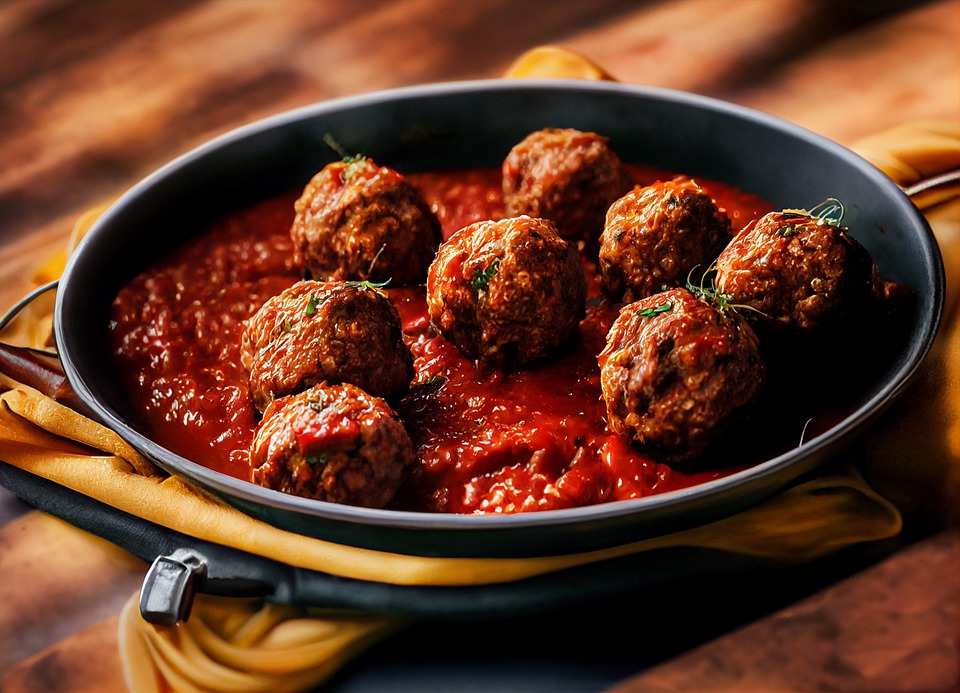

- Preperation time: 12 minutes
- Cooking time: 10 minutes
- Wine suggestions: Cerasuolo d'Abruzzo
Italian Meatballs
- 3 tablespoons fine white bread crumbs
- 5 ounces milk to soak
- 2 tablespoons olive oil
- 2 peeled shallots and finely dices
- 2 cloves garlic chopped
- red pepper finely sliced
- 1 ounce dry white wine
- 214 oz. cans of chopped tomatoes
- salt and pepper
- 1/2 pound ground beef
- 3 garlic cloves peeled and halved
- a bunch of Italian parsley
- 2 tablespoons of grated Romano cheese
- flour to dust meatballs before frying
Cooking Directions
- In a mixing bowl add the breadcrumbs, pour just enough milk to cover, and place aside to let the breadcrumbs soak as
you preheat the oven to 350℉
- Make the sauce by heating 2 tablespoons of olive oil in a frying pan and lightly fry the chopped shallots, pepper, and garlic for 2-3 minutes
until soft.
- Add 2 14oz cans of tomatoes, basil, oregano, and some seasoning with a white wine splash to deglaze the pan. Let the sauce simmer for
about 10-15 minutes
- As the sauce simmers make the meatballs. Place the ground beef and pork into a mixing bowl, add the chopped garlic, parmesan, 1 jalapeno finley
chopped with seeds and parsley.
Now press the breadcrumbs to take out the excess milk and add them with the ground meat. Thoroughly mix working with hands, then season
salt and pepper
- Shape balls the size of golf balls, and dust them with flour. Now in a frying pan, heat the olive oil, when the oil is hot start frying
the meatballs in batches of 4-5 not to overcrowd them; fry until golden.
- After drying add the meatballs to the sauce and place everything into a casserole dish. Place in a 350℉ preheated oven and bake
for 10 minutes. Serve with your favorite pasta, as a side dish or light salad.